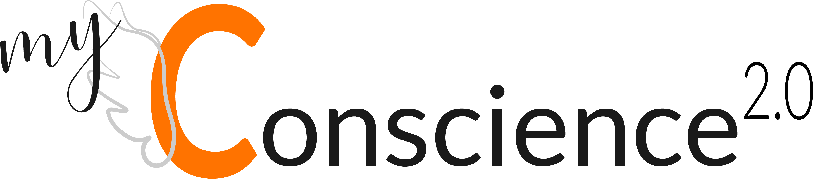

<!--<ion-header>-->
  <!--<ion-navbar>-->
    <!--<button ion-button menuToggle>-->
      <!--<ion-icon name="menu"></ion-icon>-->
    <!--</button>-->
    <!--<ion-title>Home</ion-title>-->
  <!--</ion-navbar>-->
<!--</ion-header>-->

<!--<ion-content padding>-->
  <!--<h3>Ionic Menu Starter</h3>-->

  <!--<p>-->
    <!--If you get lost, the <a href="http://ionicframework.com/docs/v2">docs</a> will show you the way.-->
  <!--</p>-->

  <!--<button ion-button secondary menuToggle>Toggle Menu</button>-->
<!--</ion-content>-->
<ion-content class="content-home">
  
  <ion-card class="card-home">
    <p class="p-home">
      Salut,
    </p>
    <p class="p-home">
      c’est ta conscience 2.0 qui te parle.
    </p>
    <p class="p-home">
      Ensemble nous allons réaliser de grande choses. Fini la procrastination et place à l’action !
    </p>
    <p class="p-home">
      Je me suis matérialisée pour simplifier nos échanges.
      Grâce à cela nous allons pouvoir lister des tâches à effectuer et/ou des objectifs à atteindre.
    </p>
    <p class="p-home">
      Je compte sur toi pour ne pas me faire faux bond.
      J’ai confiance en nous !
    </p>
    <p class="p-home">
      J’ai hâte, on commence quand ?
    </p>
    <div class="div-button">
      <button class="green" ion-button (click)="handleClickHome()">suivant</button>
    </div>
  </ion-card>
</ion-content>
